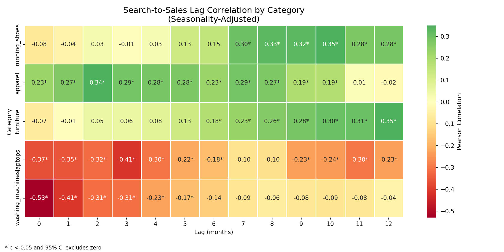
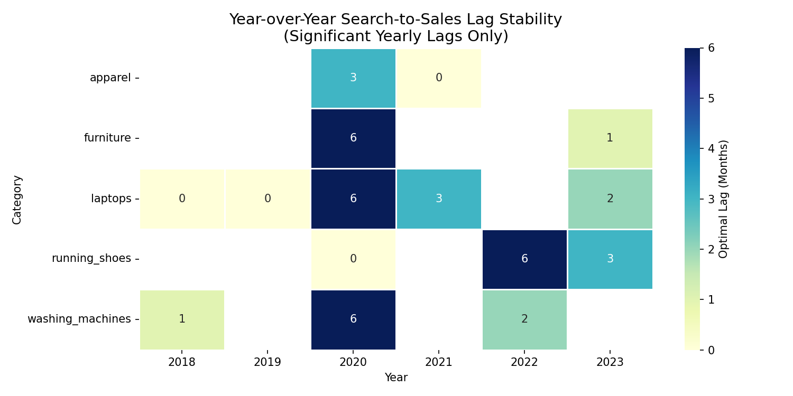

Retail demand intelligence
5
Categories Analyzed
0-12 Months
Conversion Windows
p < 0.05
All Results Statistically Validated
Consumer Intent Intelligence Platform
Quantifying the gap between search intent and retail purchase behavior across five product categories
Executive Summary
The Business Question
A search-to-sales lag model turns noisy consumer intent signals into practical campaign timing intelligence.
Can search behavior help retailers identify when consumer intent starts building - before sales happen?Intent before revenue
Implication: if search demand forms months before purchase behavior shows up in retail sales, marketers can shift spend earlier and meet consumers while they are still researching. This dashboard identifies which categories show lead indicators, which categories do not, and how those lags translate into media planning windows.
Data Collection
Seasonality Removal
Lag Correlation
Statistical Validation
Media Recommendations
Validated Findings
Search-to-Purchase Lag by Category
Each reported result passes a statistical significance screen and is interpreted as a timing relationship, not a causal claim.
| Category | Optimal Lag | Correlation | p-value | Interpretation |
|---|---|---|---|---|
| Furniture | 12 months | 0.350 | 0.000039 | Search leads sales by a full planning cycle |
| Running Shoes | 10 months | 0.351 | 0.000033 | Intent builds well before seasonal peaks |
| Apparel | 2 months | 0.344 | 0.000027 | Short cycle, useful for seasonal timing |
| Laptops | 3 months | -0.413 | 0.00000037 | Broad search does not predict sales timing cleanly |
| Washing Machines | 0 months | -0.529 | 0.0000000000098 | Likely reactive or replacement-driven behavior |
2025 Model Update
Search behavior shifted. The model needed recalibration.
Extending the dataset through 2025 revealed that two previously reliable lead indicators reversed direction - a finding with direct implications for campaign timing models built on pre-2024 data.
| Category | 2018-2023 Signal | 2018-2025 Signal | Direction Change | Behavioral Interpretation |
|---|---|---|---|---|
| Running Shoes | +10 months r=0.35 | +12 months r=0.64 | Strengthened ↑ | More deliberate purchase decision post-pandemic |
| Apparel | +2 months r=0.34 | Inverse r=-0.21 | Flipped ↓ | Social commerce and impulse buying disrupted the consideration cycle |
| Furniture | +12 months r=0.35 | Inverse r=-0.20 | Flipped ↓ | Same-day delivery normalized - algorithmic discovery shortened decision cycle |
| Laptops | Inverse r=-0.41 | Inverse r=-0.24 | Stable (inverse) | Search reflects research behavior, not purchase intent - consistent across both windows |
| Washing Machines | Inverse r=-0.53 | No significant signal | Dissolved | No stable relationship across the full 7-year window |
Recalibration insight: A lag model built on 2018-2023 data would have mistimed furniture and apparel campaigns in 2025. This demonstrates why search-intent models require structural revalidation when consumer behavior signals change direction - not just annual data refreshes.
Analysis Outputs
Analysis Outputs
The dashboard keeps the visual evidence close to the business interpretation so the recommendation is easy to audit.
Search-to-Sales Lag Correlation Heatmap

Each cell shows the Pearson correlation at that lag. The highest positive value per row is the optimal search-to-purchase window for that category.
Year-over-Year Lag Stability (2018-2023)

2020 shows a consistent spike across high-involvement categories - furniture, laptops, and washing machines all shifted to a 6-month lag during the pandemic before compressing post-recovery.
Decision Layer
Ad Spend Timing Recommendations
Translating lag findings into campaign planning decisions
Cost of mistiming: A brand that waits for peak sales season to ramp spend on furniture has already missed 12 months of consideration-phase intent. For running shoes, late entry means competing at peak CPMs for an audience that may have already made its decision.
| Category | Recommended Ramp Start | Timing Risk Window | Signal Strength | Strategic Implication |
|---|---|---|---|---|
| Furniture | November (prior year) | Miss November start = entire cycle lost | Strong | Begin brand awareness spend 12 months before peak - performance spend alone will miss the consideration window entirely. |
| Running Shoes | February | 10-month window - 2 months of buffer | Strong | Front-load upper-funnel spend in Q1 to capture intent that converts in Q4. |
| Apparel | October | 2-month window - no buffer | Strong | 2-month window allows seasonal campaign alignment - standard planning cadence works here. |
| Laptops | September | Negative signal - timing model unreliable | Inverse | Search volume is not a reliable timing signal - align spend with product release cycles and promotions instead. |
| Washing Machines | December | Reactive category - always-on strategy recommended | Inverse | Purchase is replacement-driven - always-on presence more effective than seasonal campaigns. |
Analytical caveat: These results are correlational, not causal. They show timing relationships between search behavior and sales but do not prove that search interest causes purchases.
Statistical Rigor
Statistical Validation
The model reports statistically defensible relationships and explicitly flags where the evidence is directional only.
Significance Threshold
p < 0.05Every cited lag result passes significance filtering
Confidence Intervals
95% CIAll results exclude zero in their confidence interval
Tier Hypothesis Test
p = 0.867Low vs high-consideration tier difference was not statistically significant - reported as directional only
Build Notes
How It Was Built
The workflow is designed to be reproducible, statistically transparent, and directly connected to business decisions.
Data Sources
Google Trends weekly search interest (2018-2023) and U.S. Census Monthly Retail Trade Survey. Both are free, public, and documented.
Resampling
Weekly search data resampled to monthly frequency to align with Census sales cadence. Alignment done on shared date index.
Seasonality Removal
Additive seasonal decomposition applied to both series before correlation. Removes annual patterns so correlation reflects true search-sales timing, not shared seasonality.
Lag Correlation
Pearson correlation tested at each lag from 0 to 12 months. Sales series shifted backward to test whether search at time t predicts sales at time t+lag.
Statistical Filtering
Only lags with p < 0.05 and 95% confidence intervals excluding zero are reported. Insignificant results treated as no detectable relationship.
Star Schema Warehouse
Results stored in a DuckDB star schema with fct_retail_sales, fct_search_interest, dim_category, and dim_date tables. KPI views built on top for recommendation output.